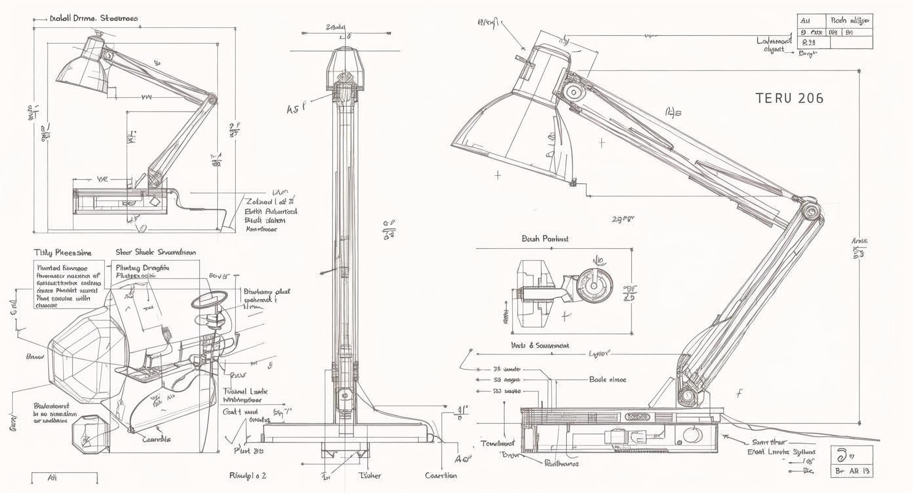

About Gray Matter Light Co.
Illuminating Innovation. Inspiring Productivity.
Gray Matter Light Co. is a leading provider of innovative lighting solutions designed to enhance productivity and comfort. Founded on the principle that superior lighting is essential for both productivity and well-being, we are dedicated to marrying cutting-edge technology with minimalist design.
We specialize in intelligent LED fixtures that not only save energy but also allow users complete control over their environment. Our commitment extends beyond aesthetics - every product features the latest in sustainable LED technology, offering customizable brightness and color temperatures that are effortlessly controlled through touch sensors or seamless integration with smart home systems.
Our Story
Founded in 2020, Gray Matter Light Co. began with a simple mission: to revolutionize the way people think about lighting. Our founder, frustrated with bulky, inefficient lamps that couldn't adapt to different tasks and moods, set out to create something better.
What started as a small startup in a garage has grown into a recognized brand in the smart lighting industry. Through our unwavering commitment to quality, innovation, and customer satisfaction, we've established ourselves as a leader in intelligent illumination.
Today, our products light up homes, offices, and creative spaces around the world, helping people work smarter, feel better, and live more sustainably.

Our Guarantee
At Gray Matter Light Co., we stand behind every product we sell. If you are not completely satisfied with your purchase for any reason within 30 days, we offer a full, no-hassle refund - no questions asked. Simply contact our customer service team, and we'll process your return immediately. Your happiness and satisfaction are our top priority.